/* richard-misrach - proofs */
12 plates. Deterministic overlays rendered by the composition-analysis skill.
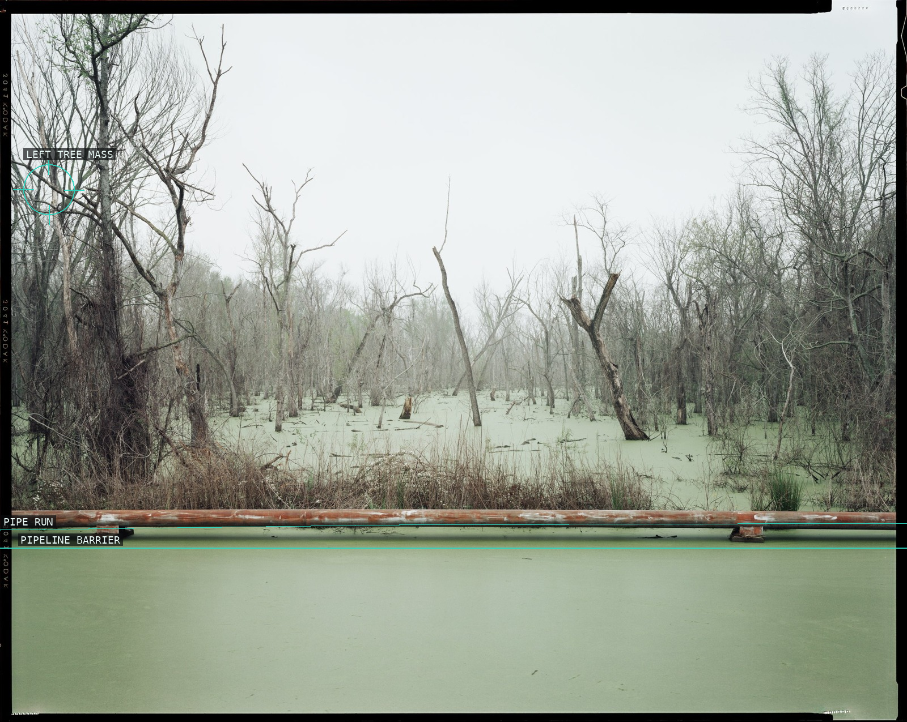
01-swamp-and-pipeline
A hard industrial bar seals a flooded, pale field of dead trees.
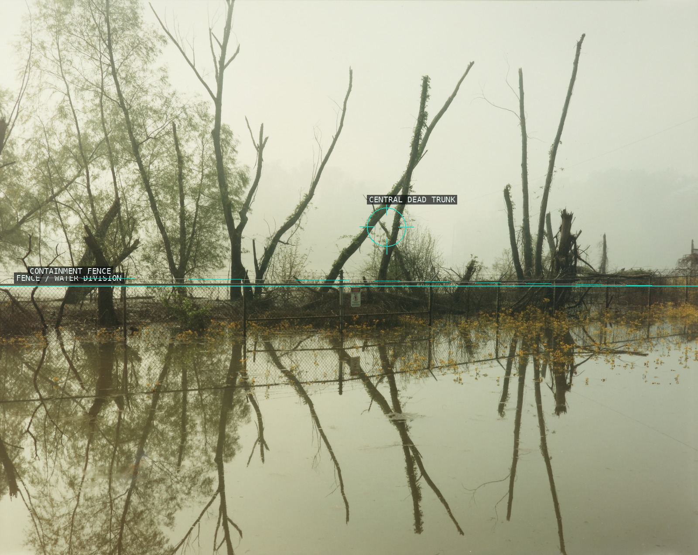
02-dead-trees-toxic-waste
The fence divides dead trunks from their unstable reflections.
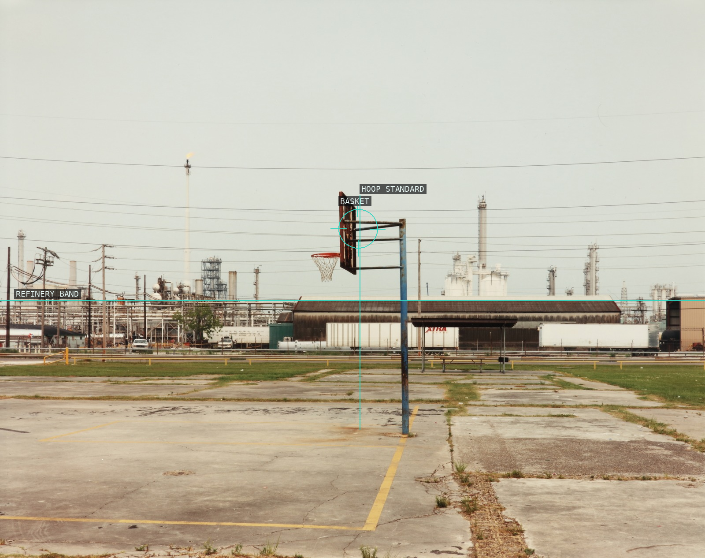
03-playground-shell-refinery
A lone basketball standard holds against the refinery's lateral field.
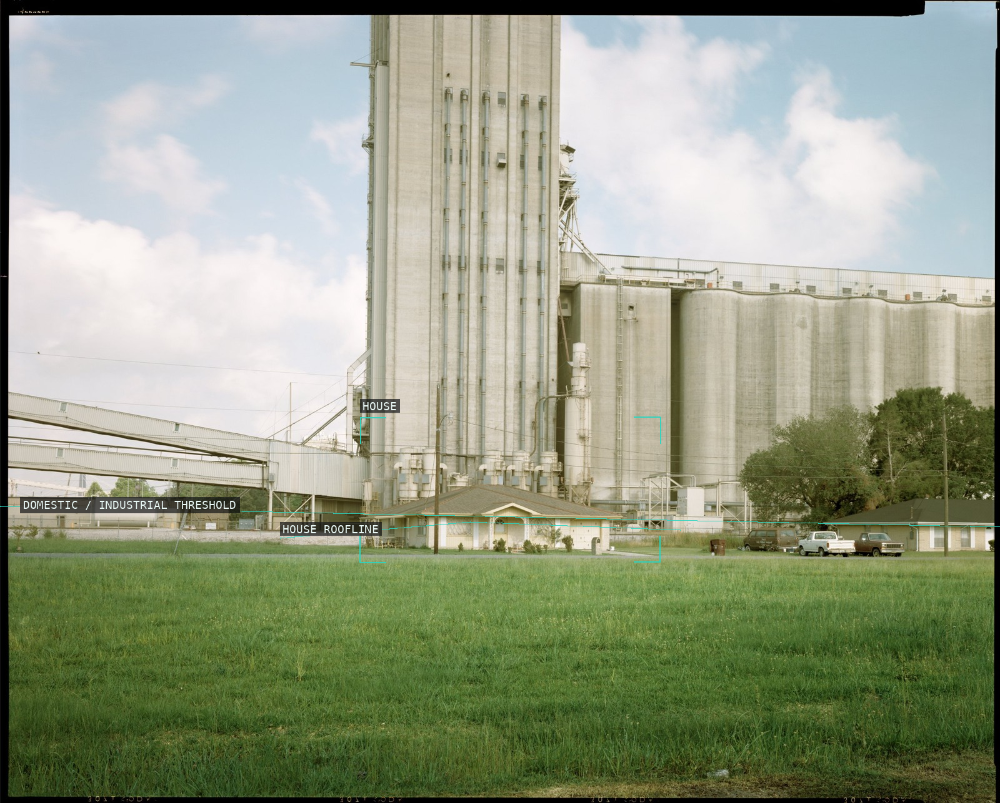
04-home-grain-elevator
The small house is measured against an elevator that overwhelms its scale.
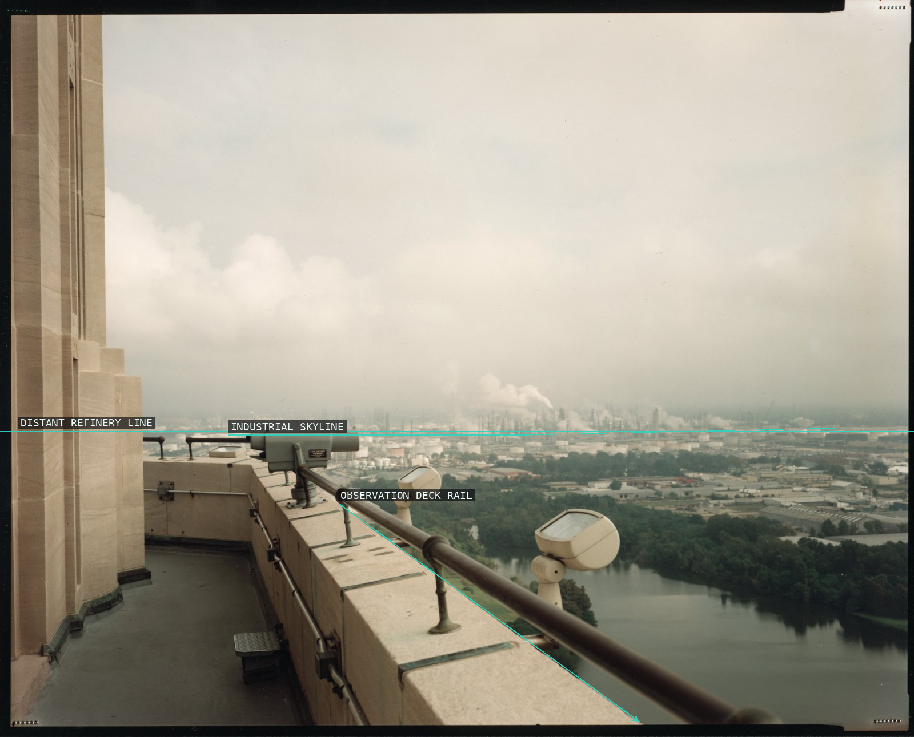
05-exxon-refinery-state-capitol
A civic lookout rail points through haze toward a distant refinery.
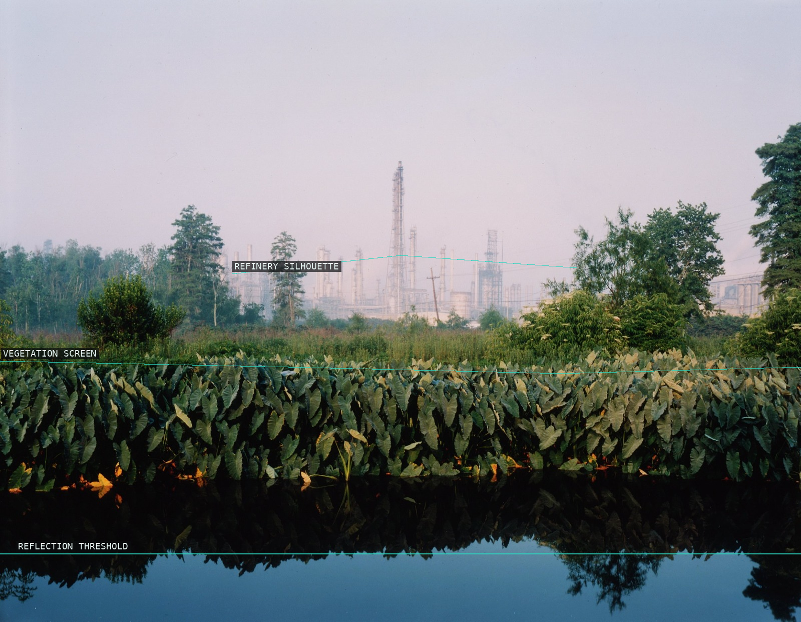
06-roadside-vegetation-orion
A dense vegetal screen delays the pale industrial horizon behind it.
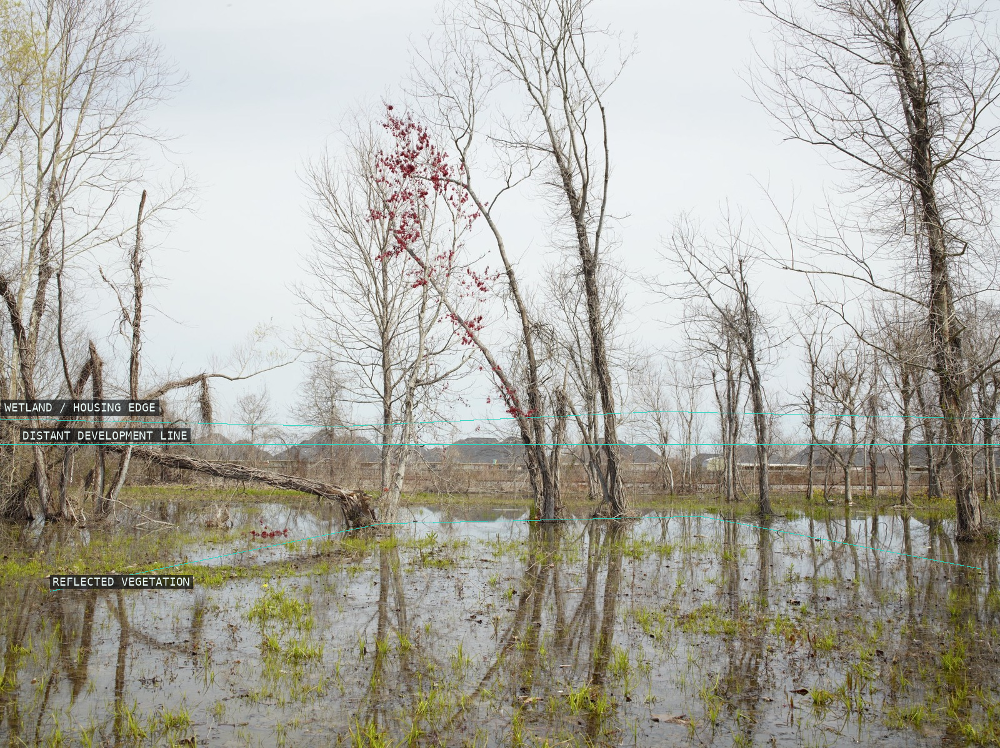
07-new-housing-sorrento
Houses sit as a thin distance behind flooded trees and their reflections.
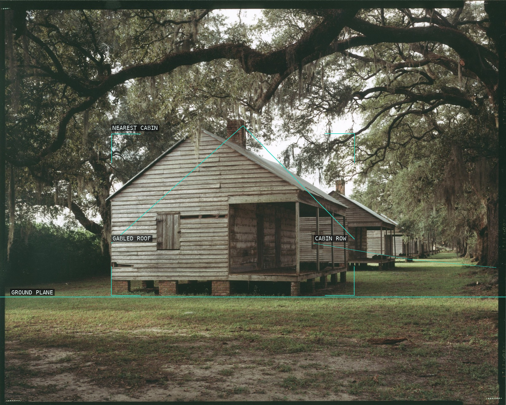
08-restored-slave-cabins
Cabin roofs and oaks pull a seemingly still historic scene into recession.
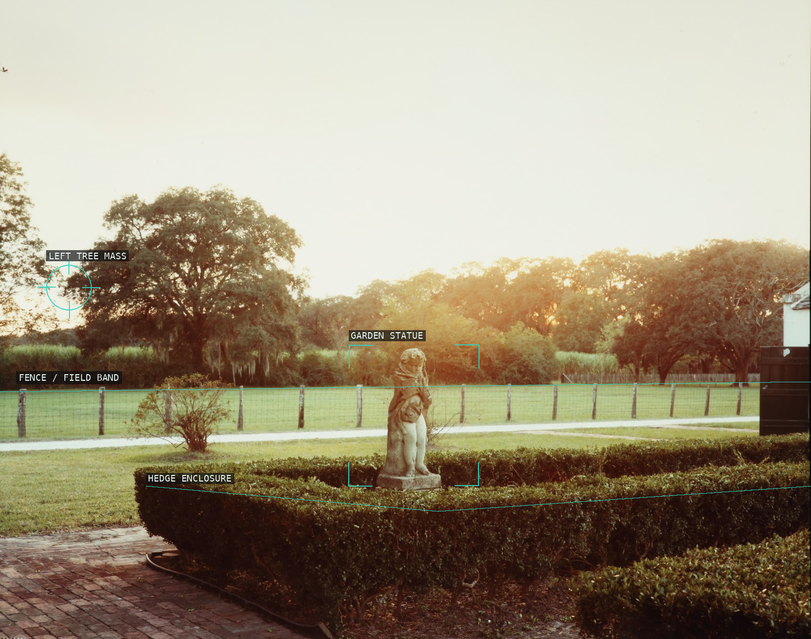
09-evergreen-plantation-statuary
A small statue is contained by a hedge against an open, luminous field.
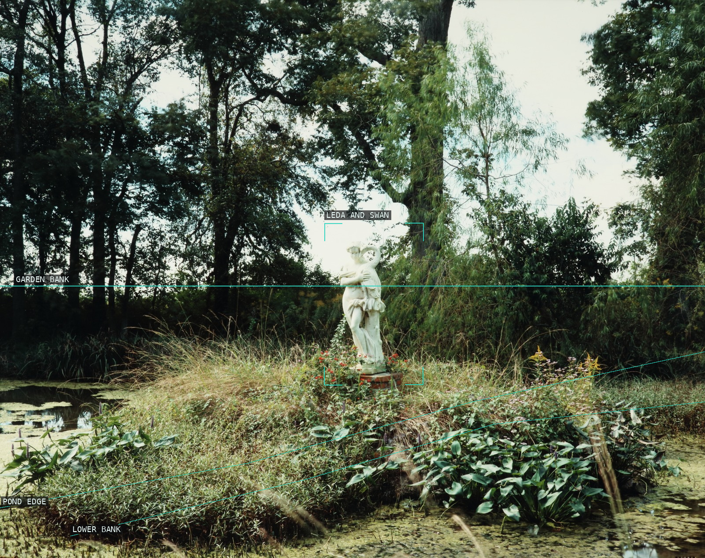
10-nottoway-plantation-leda-swan
Two pond edges send the eye through foliage to an isolated white sculpture.
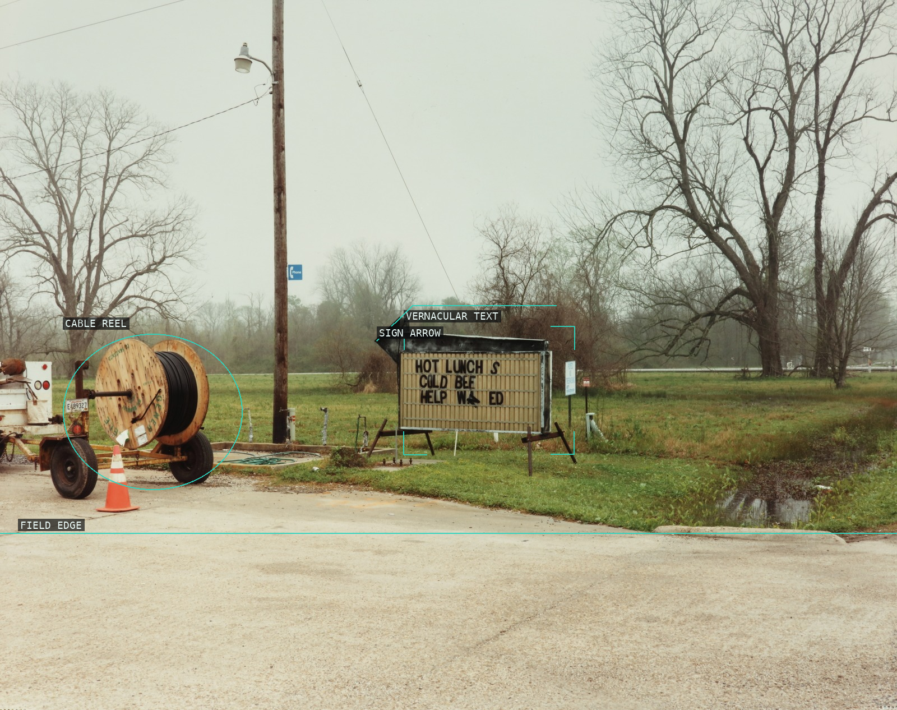
11-hot-lunch-cold-bee
A small roadside sign gives a broad, damp field a human-scale interruption.
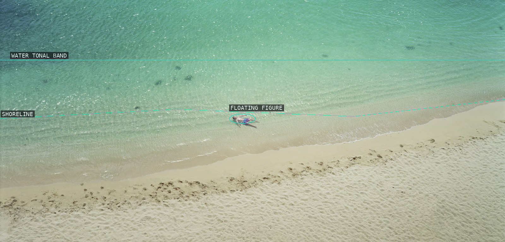
12-untitled-892-03
A tiny figure interrupts the wide, shallow division of water and sand.